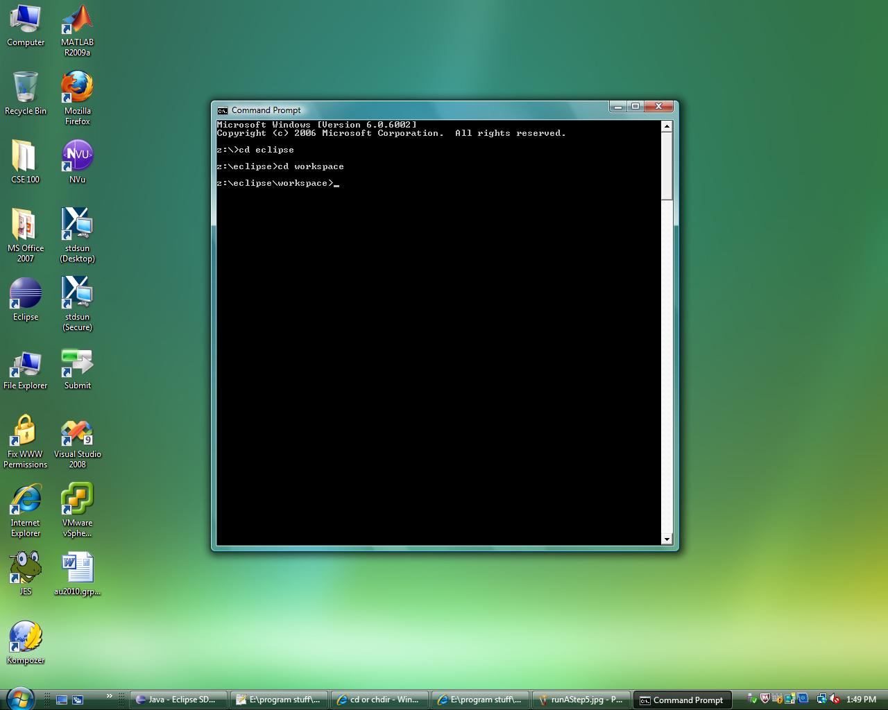
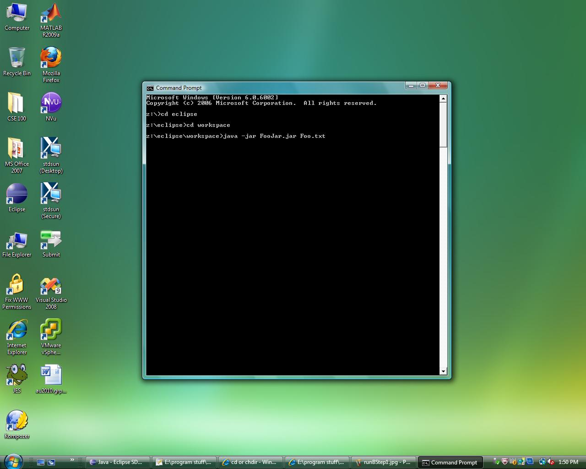
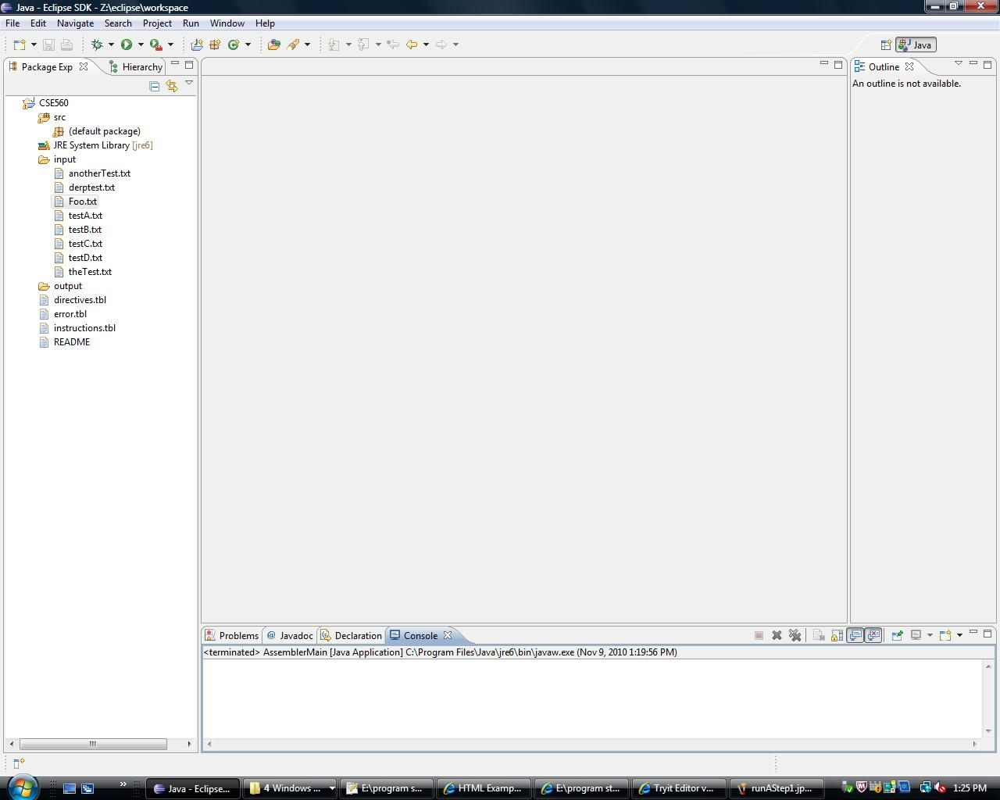
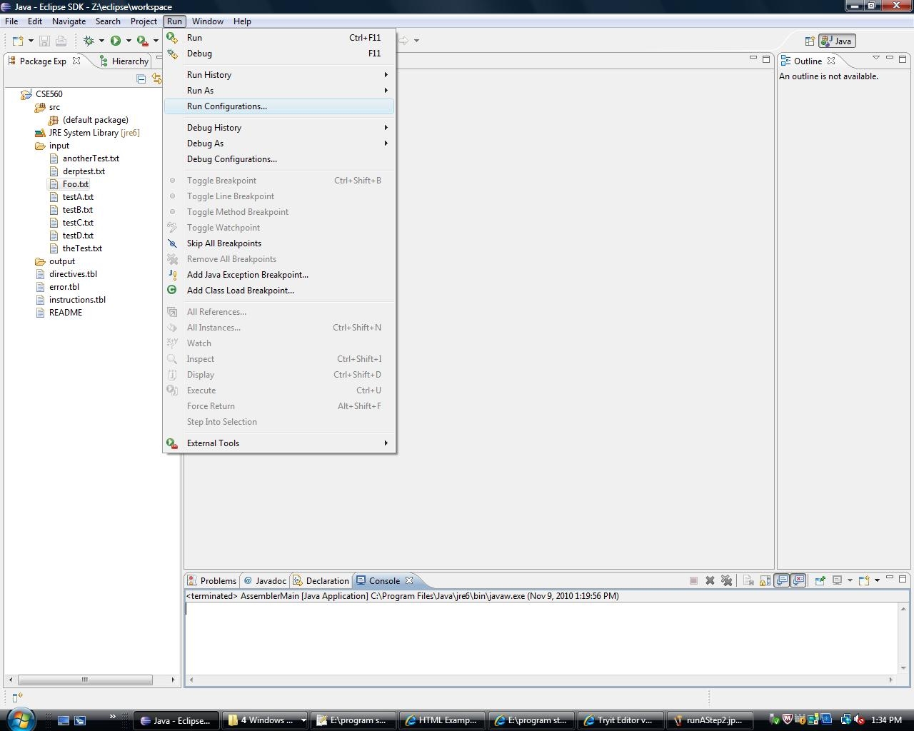
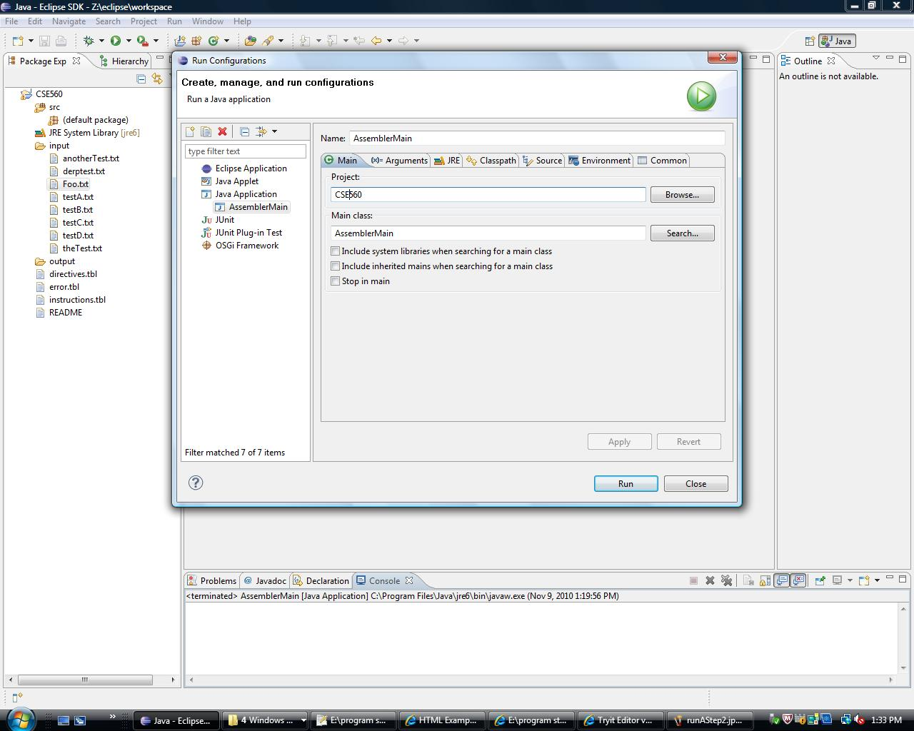
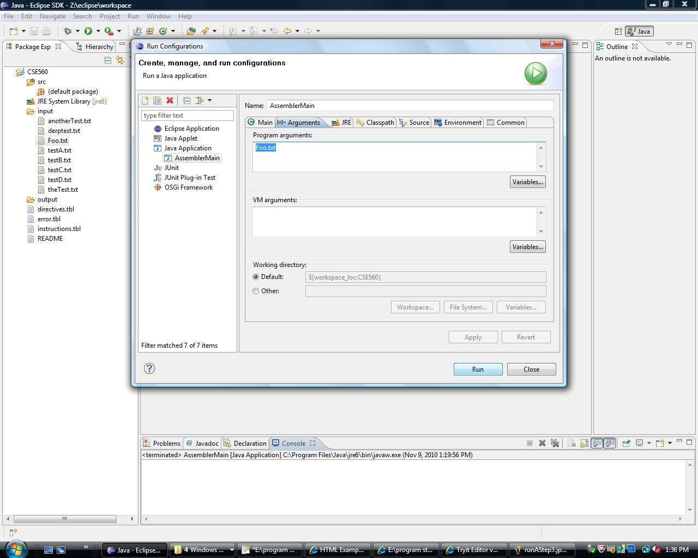
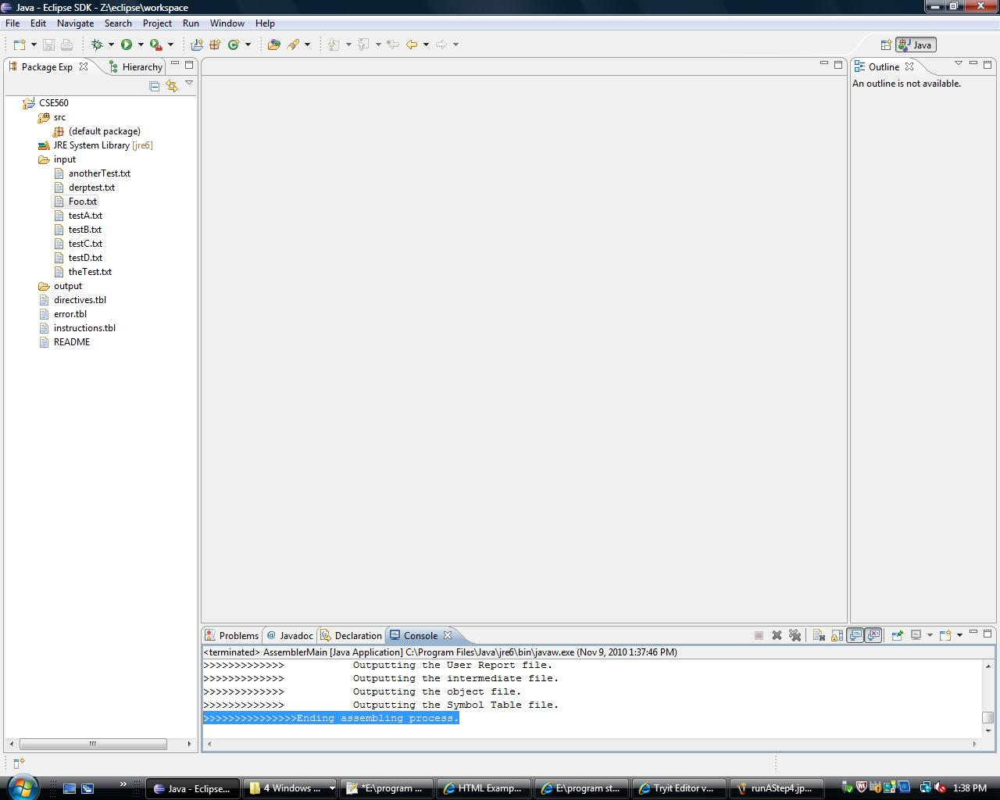

The SAL560 is an assembler machine with the following attributes:
The SAL560 can perform commands that act to predefine variables and labels, tell the assembler when to start and end the program, and other special commands that the user may want to use. Directives are typically executed after the .data directive and before the .text directive. For a list of available directives, click here.
Instructions compose the primary backbone of the SAL560, enabling a host of arithmetic, value-orienting, and IO-related functions. These are typically executed after the .text directive. For a list of available instructions, click here.
Operands are classified as any argument that can be passed into an instruction or directive. This includes [but is not limited to] registers, memory references, star notation, and immediate values. For a list of syntax rules regarding use of operands, click here.
Labels can be defined and used as pointers to specific values that the user may want to reference to at a later time in the program. Syntactically, labels must start an alphabetical character, lower- or upper-case, and preceding characters can include alphanumeric characters and underscores.
Literal are classified as either numerical values within bounds of the allowed range of the operand or ASCII coded characters. Each operand is a total of 32 bits in length; this means that for ASCII characters the most that can be represented by one literal is four [e.g. 'AbcD' : 8 bits for each character]. Thus, each word of memory can hold up to 16 characters.
Literals, when asked to be evaluated arithmetically, are processed using a fixed point 2's complement algorithm. Any overflow of bits outside the 32-bit bounds will not affect the value of the processed literal. Attempting to divide by zero will yield an error pushed out from the error table.
The assembler has the role to share information with the linker so that the linker program does what the programmer had planned. Information is shared via the object file and the associated fields. One of the fields (A, R, or E) defines how the loader should adjust the address portion of the instruction.
reg1listed as an operand stores the resut [if valid] into the first register operand.
| Opcode | Unused | Register 1 | Register 2 | Register 3 | Shift/Rotate Amount (where applicable) | Unused | Function code | Total Bits |
|---|---|---|---|---|---|---|---|---|
| 6 bits | 2 bits | 3 bits | 3 bits | 3 bits | 6 bits | 3 bits | 6 bits | 32 bits |
| Type | Opcode (binary) | Function code | Instruction | Syntax | Meaning | Detail | Example |
|---|---|---|---|---|---|---|---|
| R | 0000 0001 | 0001 1000 | Multiply | mul reg1, reg2, reg3 | reg1 = reg2 * reg3 | Multiplies the 2nd and 3rd register operands. If overflow results, set status register executes a trap on overflow. | mul $1,$2,$3 |
| R | 0000 0001 | 0001 1001 | Multiply unsigned | mulu reg1, reg2, reg3 | reg1 = reg2 * reg3 | Multiplies the 2nd and 3rd register operands. Ignores overflow. | mulu $1,$2,$3 |
| R | 0000 0001 | 0010 0000 | Add | add reg1, reg2, reg3 | reg1 = reg2 + reg3 | Adds the 2nd and 3rd register operands. If overflow results, set status register executes a trap on overflow. | add $2,$3,$4 |
| R | 0000 0001 | 0010 0001 | Add unsigned | addu reg1, reg2, reg3 | reg1 = reg2 + reg3 | Multiplies the 2nd and 3rd register operands. Overflow is ignored. | addu $2,$3,$4 |
| R | 0000 0001 | 0010 0010 | Subtract | sub reg1, reg2, reg3 | reg1 = reg2 - reg3 | Subtracts the 3rd from the 2nd register operand. If overflow results, set status register executres a trap on overflow. | sub $3,$4,$5 |
| R | 0000 0001 | 0010 0011 | Subtract unsigned | subu reg1, reg2, reg3 | reg1 = reg2 - reg3 | Subtracts the 3rd from the 2nd register operand. Ignores overflow. | subu $3,$4,$5 |
| R | 0000 0001 | 0001 1010 | Divide | div reg1, reg2, reg3 | reg1 = reg2 / reg3 | Divides the 2nd by the 3rd register operand. If overflow results, set status register executres a trap on overflow. | div $4,$5,$6 |
| R | 0000 0001 | 0001 1011 | Divide unsigned | divu reg1, reg2, reg3 | reg1 = reg2 / reg3 | Divides the 2nd by the 3rd register operand. Ignores overflow. | divu $4,$5,$6 |
| R | 0000 0001 | 0001 1100 | Power | pwr reg1, reg2, reg3 | reg1 = reg2 ** reg3 | Raises contents of reg2 to the power specified in reg3. If overflow results, set status register executres a trap on overflow. | pwr $1,$3,$5 |
| R | 0000 0010 | 0000 0000 | Shift left logical | sll reg1, reg2, amt | reg1 = reg2 << amount | Takes the binary value of the 2nd register operand and shifts it amt number of bits to the left (multiplies by 2CONST) | sll $1,$2,Three |
| R | 0000 0010 | 0000 0020 | Shift right logical | srl reg1, reg2, amt | reg1 = reg2 >> amount | Shifts the second reg operand value a number of bits to the right equal to amt - zeros are shifted in to fill (divides by 2's complement). Note: this instruction only works as division of a two's complement number if the value is positive. | srl $2,$3,Four |
| R | 0000 0010 | 0000 0011 | Shift right arithmetic | sra reg1, reg2, amt | reg1 = reg2 >> amount | Takes the binary value of the 2nd register operand and shifts it amt number of bits to the right - the sign bit is shifted in (divides 2's complement number by 2C) | sra $3,$4,Five |
| R | 0000 0010 | 0010 0100 | AND | and reg1, reg2, reg3 | reg1 = reg2 & reg3 | Bitwise "and": changes the bits in the first register based on whether or not each respective bit in the second register is the same as the third register | and $2,$4,$6 |
| R | 0000 0010 | 0010 0101 | OR | or reg1, reg2, reg3 | reg1 = reg2 | reg3 | Bitwise "or": changes the bits in the first register based on whether or not each respective bit in either the second register or the third register is "1" | or $2,$4,$3 |
| R | 0000 0010 | 0010 0110 | Exclusive or | xor reg1, reg2, reg3 | reg1 = reg2 ^ reg3 | Bitwise "xor": changes the bits in the first register based on whether or not each respective bit in either BUT NOT BOTH the second register or the third register is "1" | xor $1,$5,$3 |
| R | 0000 0010 | 0010 0111 | Nor | nor reg1, reg2, reg3 | reg1 = ~(reg2 | reg3) | Bitwise "nor": changes the bits in the first register based on the negation of the "or" command using the second and third register operands. | nor $5,$3,$1 |
| R | 0000 0011 | 0000 1000 | Jump register | jr reg2 | goto address reg2 | Jumps to the address contained in the specified register | jr $7 | R | 0011 1111 | - | DUMP | DUMP amt1, amt2, amt3 | *See detail*------> | If amt1 is 1 dump registers. If amt2 is 1: dump active memory (ie memory where data or instructions reside. If amt3 is 1: dump LC, EFFADDR | dump 1,0,1 |
| Opcode | Unused | Register 1 | Register 2 | Unused | Immediate value | Total Bits |
|---|---|---|---|---|---|---|
| 6 bits | 2 bits | 3 bits | 3 bits | 2 bits | 16 bits | 32 bits |
| Type | Opcode (binary) | Instruction | Syntax | Meaning | Detail | Example |
|---|---|---|---|---|---|---|
| I | 0001 0000 | Add immediate signed | addi reg1, reg2, IM | reg1 = reg2 + IM (signed) | Adds immediate (IM) value to value in the second register operand. If overflow results, set status register executes a trap on overflow. | addi $1,$2,3 |
| I | 0001 0001 | Add immediate unsigned | addiu reg1, reg2, IM | reg1 = reg2 + IM (unsigned) | Adds immediate (IM) value to value in the second register operand. Overflow is ignored. | addiu $1,$2,3 |
| I | 0001 0010 | Subtract immediate | subi reg1, reg2, IM | reg1 = reg2 - IM (signed) | Subtracts immediate (IM) value from value in the second register operand. If overflow results, set status register executes a trap on overflow. | subi $3,$2,1 |
| I | 0001 0011 | Subtract immediate unsigned | subiu reg1, reg2, IM | reg1 = reg2 - IM (unsigned) | Subtracts immediate (IM) value from value in the second register operand. Ignores overflow. IM still sign-extended. | subiu $3,$2,1 |
| I | 0001 0100 | Multiply immediate | muli reg1, reg2, IM | reg1 = reg2 * IM (signed) | Multiplies immediate (IM) value by value in the second register operand. If overflow set status register executes a trap on overflow. | muli $2,$3,6 |
| I | 0001 0101 | Multiply immediate unsigned | muliu reg1, reg2, IM | reg1 = reg2 * IM (unsigned) | Multiplies immediate (IM) value by value in the second register operand. Ignores overflow. IM still sign-extended. | muliu $3,$2,6 |
| I | 0001 0110 | Divide immediate | divi reg1, reg2, IM | reg1 = reg2 / IM (signed) | Divides value in the second register operand by immediate (IM) value. If overflow set status register executes a trap on overflow. | divi $6,$3,2 |
| I | 0001 0111 | Divide immediate unsigned | diviu reg1, reg2, IM | reg1 = reg2 / IM (unsigned) | Divides value in the second register operand by immediate (IM) value. Ignores overflow. IM still sign-extended. | diviu $6,$3,2 |
| I | 0011 0011 | Load immediate | lui reg1, IM | reg1 = IM << 16 | Loads a 16-bit immediate operand into the upper 16-bits of the register specified | lui $1,value |
| I | 0011 0100 | OR immediate | ori reg1, reg2, IM | reg1 = reg2 | IM | Bitwise "or": changes the bits in the first register based on whether or not each respective bit in either the second register or the IM value is "1" | ori $1,$4,switches |
| I | 0011 0101 | Exclusive OR immediate | xori reg1, reg2, IM | reg1 = reg2 ^ IM | Bitwise "xor": changes the bits in the first register based on whether or not each respective bit in either BUT NOT BOTH the second register or the IM value is "1" | xori $1,$3,switches |
| I | 0011 0110 | NOR immediate | nori reg1, reg2, IM | reg1 = ~( reg2 | IM) | Bitwise "nor": changes the bits in the first register based on the negation of the "or" command using the second register and IM value operands. | ori $1,$2,negaters |
| I | 0011 0111 | AND immediate | andi reg1, reg2, IM | reg1 = reg2 & IM | Bitwise "and": changes the bits in the first register based on whether or not each respective bit in the second register is the same as the IM value | ori $2,$1,agreements |
| I | 0011 1101 | Set Register Values | SRV reg1, reg2, IM | reg1:R2=IM | Registers reg1 through reg2 set to IM value. (Note: R1 and R2 can be the same register. This would load the single register with the value IM) | srv $3,$5,newval |
| I | 0001 1110 | Outni | outni num, IM | *See detail*------> | Immediate value number is displayed to user | outni 3,displayed |
| I | 0001 1111 | Outci | outci num, IM | *See detail*------> | Immediate char. or string is dispalyed to user | outni 6,storedChar |
| Opcode | Address Code | Register 1 | Register 2 | Unused | Memory Reference | Total Bits |
|---|---|---|---|---|---|---|
| 6 bits | 2 bits | 3 bits | 3 bits | 2 bits | 16 bits | 32 bits |
| Type | Opcode (binary) | Instruction | Syntax | Meaning | Detail | Example |
|---|---|---|---|---|---|---|
| S | 0001 1010 | Add Register and Storage | adds reg1, reg2, addr (can't use an index register) | reg1=reg2+addr (memory reference based on addr) | adds one register with the contents of a memory reference. if valied, reg1 = results. if overflow, set status register executes a trap on overflow. reg1 = LO $R5 = HI | adds $6,$4,cats |
| S | 0001 1011 | Subtract Register and Storage | subs reg1, reg2, addr (can't use an index register) | reg1=reg2-addr (memory reference based on addr) | Subtracts one register with the contents of a memory reference. if valid, reg1= results. if overflow, set status register executes a trap on overflow. reg1 = LO $R5 = HI | subs $5,$3,dogs |
| S | 0100 1100 | Multiply Register and Storage | muls reg1, reg2, addr (can't use an index register) | reg1=reg2 * addr (memory reference based on addr) | Multiplies one register with the contents of a memory reference. if valid, reg1 = results. if overflow, set status register executes a trap on overflow. reg1 = LO $R5 = HI | adds $4,$2,wolves |
| S | 0100 1101 | Divide Register and Storage | divs reg1, reg2, addr (can't use an index register) | reg1=reg2 / addr (memory reference based on addr) | Divides one register with the contents of a memory reference. if valid, reg1 = results. if overflow, set status register executes a trap on overflow. reg1 = LO $R5 = HI | adds $3,$1,hunters |
| S | 0010 0000 | Jump on equal | jeq reg1, reg2, addr | if (reg1==reg2) go to PC=addr | Goes to the instruction at the specified address if the values in the two registers are equal | jeq $1,$2,grasshopper |
| S | 0010 0001 | Jump on not equal | jne reg1, reg2, addr | if (reg1 != reg2) go to PC=addr | Goes to the instruction at the specified address if the values in the two registers are not equal | jne $1,$3,frog |
| S | 0010 0010 | Jump greater than | jgt reg1, reg2, addr | if (reg1 > reg2) go to PC=addr | Goes to the instruction at the specified address if the value in register 1 is greater than the value in register 2 | jgt $1,$4,kitty |
| S | 0010 0011 | Jump less than | jlt reg1, reg2, addr | if (reg1 < reg2) go to PC=addr | Goes to the instruction at the specified address if the value in register 1 is less than the value in register 2 | jlt $1,$5,lion |
| S | 0010 0100 | Jump less than or equal | jle reg1, reg2, addr | if (reg1 <= reg2) go to PC=addr | Goes to the instruction at the specified address if the value in register 1 is less than or equal to the value in register 2 | jle $1,$6,tiger |
| S | 0010 0111 | Store word address | sw reg1, addr(reg2) | Memory[reg2 + IM] = reg1 | Stores the value in the register into: MEM[$s+C] | sw $5,pidgey($2) |
| S | 0011 0000 | Load word address | lw reg1, addr(reg2) | reg1 = Memory[reg2 + addr] | Loads the word value stored from: MEM[$s+C] | lw $6,pidgeotto($2) |
| S | 0011 0001 | Load negative word | lnw reg1, addr(reg2) | reg1 = -Memory[reg2 + addr] | Loads negative value stored from: MEM[$s+C] | lnw $1,pidgeot($3) |
| S | 0011 0010 | Load word immediate | lwi reg1, addr(reg2) | reg1 = Memory[reg2 + addr] | Loads register with immediate value | lwi $2,charmander($3) |
| S | 0011 1000 | Load address of word into Register | la reg1, addr(reg2) | reg1 = addr(reg2) | The address of the memory location + the contents of the index register is placed in reg1 | la $3,charmeleon($3) |
| S | 0011 1001 | Store address in word | sa reg1, addr(reg2) | addr(reg2) = reg1 | stores a register value into: MEM[$s+C] | sa $4,charizard($3) |
| S | 0011 1010 | And register to storage | ands reg1, addr(reg2) | reg1 = reg1 & addr(reg2) | ands one register with the contents of a memory reference, bitwise | ands $5,growlithe($3) |
| S | 0011 0111 | OR register to storage | ors reg1, addr(reg2) | reg1 = reg1 | addr(reg2) | ors one register with the contents of a memory reference, bitwise | ors $6,arcanine($3) |
| S | 0000 0110 | Jump | j addr(reg1) | PC = addr | Uncontionally jumps to the instruction at the specified address | j mew($1) |
| S | 0000 0111 | Jump and link | jal reg1, reg2, addr | PC=addr | For procedure call - used to call a subroutine, $15 holds the return address; returning from a subroutine is done by: jr $15. Return address is PC + 1. reg1 holds the address of the first element of the parameter list. | jal $1,$4,squirtle |
| Opcode | Address Code | Register 1 | Quantity in Words | Memory Reference | Total Bits |
|---|---|---|---|---|---|
| 6 bits | 2 bits | 3 bits | 5 bits | 16 bits | 32 bits |
| Opcode | Address Code | Unused | Destination Address | Total Bits |
|---|---|---|---|---|
| 6 bits | 2 bits | 8 bits | 16 bits | 32 bits |
| Type | Opcode (binary) | Function code | Instruction | Syntax | Meaning | Detail | Example |
|---|---|---|---|---|---|---|---|
| IO | 0000 1010 | - | Inn | inn num, addr(reg1) | *See detail*------> | A number from the keyboard is stored into memory | inn 4,Houou($4) |
| IO | 0000 1011 | - | Inc | inc num, addr(reg1) | *See detail*------> | A Char. or String from keyboard is stored into memory | inc 3,Moltres($3) |
| IO | 0000 1100 | - | Outn | outn num, addr(reg1) | *See detail*------> | Number from memory is displayed to user | outn 2,Zapdos($2) |
| IO | 0000 1101 | - | Outc | outc num, addr(reg1) | *See detail*------> | A Char. or String from memory is displayed to user | outc 5,Articuno($1) |
| J | 0000 1000 | - | HALT | halt n | n ranges 0 to 255 | Halt execution display user define code. | halt mewtwo |
| Directives | Syntax | Meaning | Section | Example |
|---|---|---|---|---|
| .start | .start:program_name initial_LC | Indicates the start of the source code(nothing may come before this), the name of the program, and the inital value for the LC | .start | .start,POKEMON,151 |
| .end | .end,program_name | Indicates the end of the program. The program_name must match the program_name from the start directive | .end | .end,POKEMON |
| .data | none | Indicates the start of a section that defines data values. You can have multiple .data's per source program | .data | .data |
| .text | none | Indicates the start of the section where source code is entered. You can have multiple .text's per source program | .text | .text |
| Int.data | ol int.data min_max | Assigns an LC and consumes a word of memory with a value between -231 to (+231-1) | .data | Bulbasaur Int.data 001 |
| Str.data | ol str.data char_str | A string of characters starting with a single quote and ending with a single quote. The string is divided into groups of four and those four are each assigned a word | .data | Two Str.data 'Ivysaur' |
| Hex.data | ol hex.data min_max.hex | Hex string in single quote. 1 to 8 hex digits 80000000 to 7FFFFFFF | .data | Mewtwo hex.data '0096' |
| Bin.data | ol bin.data min_max.bin | Binary string in single quotes. 1 to 32 digits | .data | Blastoise bin.data '1001' |
| ADR.DATA | ol adr.data label | Inter-l or exter-l | .data | Lugia adr.data Mewtwo |
| adr.exp | ol adr.exp expression | Address arithmetic expression. Can contain constants, previously equated strings prepresenting numbers, local or exter-l label references. Supports multiply, add, divide, and subtract. The programmer is allowed 1 level of nesting. The number of labels and exter-l references are limited to 3. | .data | Mew adr.exp Mewtwo+1 |
| Ent | nl ent. label_reference, label_reference, label_reference, label_reference | Up to four valided labels that must be defined within this program | .text | ent bulba,char,squirt,pika |
| Ext | nl ext. label_reference, label_reference, label_reference, label_reference | Up to four valid lables | .info | ext bulba,char,squirt,pika |
| NOP | ol nop | No operand field; generates the equivalent of sll $0,$0,0 | .text | nop |
| Exec.start | nl exec.start label_reference | Indicates to the assembler the beginning of processing instructions. Execution start address may be different than the first physical instruction | .text | exec.start missingNo |
| Mem.skip | ol mem.skip nnnn | Reserves space in memory for user-specific allocation and action. | .data | mem.skip 136 |
| Equ | rl EQU str | Equates given label to reference the value of a string; str is a string up to 32 characters. It cannot have expressions. | .text | Pikachu EQU 'thirtyTwo' |
| Equ.exp | rl Equ.EXP nnnn | Equates a symbol to an arithmetic expression | .text | Suicune EQU.EXP 250-1 |
| Reset.lc | rl RESET.lc | Resets the LC value. Must be greater than the last LC assigned | .text | Entei RESET.lc 250 |
| debug | none debug n | The number indicates whether or not to turn on the debug flag 0 -- off 1 -- on, all other numbers are invalid | .text | debug 1 |
There is only one source of input required from the user: an attempt at a SAL560 program formatted as a .txt file containing the code for the program.
This file must adhere to the following syntactical standards:
Follow these guidelines regarding each operand:
After running a program, there are three output files which are available to the user:
This table shows all of the labels that were created or used in the program, along with their location, type of symbol, and if it was equated to another value or label in the program.
The user report displays the errors that were detected by the assembler. All the source code will be printed out first, and that source will be followed by a list [by line] of errors found after the end of the program.
This file contains all of the needed output for the linker to start its processing work. There are four types of records the linker will use:
| H | Module Name | Program Length [hhhh] | Assembler assigned program load address[hhhh] | Date of Compilation [yyyy:ddd] | Time of Compilation [hh:mm:ss] | Number of linking records [hhhh] | Number of text records [hhhh] | Execution start address for this module[hhhh] | SAL | Version # | Revision # | Program Name |
|---|
| L | Entry Name | Entry address [input == HEX] | Type of entry | Program Name |
|---|
| T | Address [hhhh] | Debug Code | data Word [hhhhhhhh] | N of adjustments required [for a value N between 0 and 4 inclusive] | Type and Action of adjustment [R, E, or A] | Label reference if needed [not used with Type A] | *Up to 3 repetitions of The type, Action and Label reference* | Execution start address for this module[hhhh] | Program Name |
|---|
| E | Total number of records [hhhh] | Program name |
|---|
Total number of records = = the total number of Text records and Linking records in the assembly
For visual examples of the output, refer to the next section.
The purpose of this section is to show a typical template of a program, along with the correlating results.
This example program will compute the following and output the result to the screen: varD = 2 * varA + varB - varC
The format of the program is column-oriented:
.start,exampleOne,00 .data varA Int.data 0 varB Int.data 0 varC Int.data 0 varD Int.data 0 .text INN $2,varA | variables are given values, this line gives an error LW $2,varA | according to user input LW $3,varB LW $R4,varC |this line throws an error MUL $2,$2,$2 | reg2 = 2 * varA ADD $1,$2,$3 | reg1 = 2 * varA + varB SUB $R1,$R1,$R4 | reg1 = varD = 2 * varA + varB - varC SW $4,varC | last line throws an error OUTN 1,varC HALT 0 | 4 errors are reported in the user report .end,example1
As the program runs, it begins to keep track of where symbols are located in memory.
The following is an example symbol table that would be outputted as a result of running the preceding program:
Symbol Table Label | Location | Length | Usage | Value exampleOne | 0 | 0 | Program Name | 00 varA | 0 | 1 | int.data | 0 varB | 1 | 1 | int.data | 0 varC | 2 | 1 | int.data | 0 varD | 3 | 1 | int.data | 0
The following is an example user report that would be outputted as a result of running the preceding program:
.start,exampleOne,00 .data varA Int.data 0 varB Int.data 0 varC Int.data 0 varD Int.data 0 .text INN $2,varA | variables are given values ***Error 20 at line 8: Value must be a decimal integer*** LW $2,varA | according to user input LW $3,varB LW $R4,varC |this line throws an error ***Error 25 at line 11: Invalid register syntax. Correct format is "$X", where X is a number from [0-7]*** MUL $2,$2,$2 | reg2 = 2 * varA ADD $1,$2,$3 | reg1 = 2 * varA + varB SUB $R1,$R1,$R4 | reg1 = varD = 2 * varA + varB - varC ***Error 25 at line 14: Invalid register syntax. Correct format is "$X", where X is a number from [0-7]*** SW $4,varC | last line throws an error OUTN 1,varC HALT 0 | 2 errors are reported in the user report .end,example1 ***Error 4 at line 18: Program Names do not match up***
The following is an object file that would be outputted as a result of running the preceding program:
H | exampleOne | 000e | 00 | 2010:11:08 | 00:17:35 | 0001 | e | 00 | SAL | Version # 2.03 | Revision # 3 | exampleOne T | 0ffb | N | 00000000 | 1 | A | exampleOne T | 0002 | N | 00000000 | 1 | A | exampleOne T | 0003 | N | 00000000 | 1 | A | exampleOne T | 0004 | N | 00000000 | 1 | A | exampleOne T | 0005 | N | 02000000 | 1 | A | exampleOne T | 0006 | N | c03fffff | 1 | A | exampleOne T | 0007 | N | c05fffff | 1 | A | exampleOne T | 0008 | N | 02000000 | 1 | A | exampleOne T | 0009 | N | 04490018 | 1 | A | exampleOne T | 000a | N | 04298020 | 1 | A | exampleOne T | 000b | N | 02000000 | 1 | A | exampleOne T | 000c | N | 9c7fffff | 1 | A | exampleOne T | 000d | N | fffff7f7 | 1 | A | exampleOne T | 000e | N | 20000000 | 1 | A | exampleOne L |texampleOne | 0 | Program Name | exampleOne E | 17 | exampleOne
this assembler is designed to be run on windows-based machines, preferable operating system being either Windows XP or Windows Vista; [unable to confirm full functionality on Windows 7 or non-windows systems.]
To execute the assembler itself:
Here is an example, where our .jar file is located in z:/eclipse/workspace/ .

java -jar [jarname].jar [sourcecode]
Here is an example, where our .jar file is called FooJar.jar and our sourcecode is called Foo.txt .

>>>>>>>>>>>>>>>Ending assembling process.
When the above prompt is seen, the assembler is done and your output files are complete!
The assembler can also be run from the IDE that runs the programming language Java, Eclipse. Currently the Galileo update (v.3.5) is the most recommended version to run the assembler on.
To run your program, the name of the file must be passed as an argument in the AssemblerMain class, in the format of a .txt file, done by following the proper steps:




>>>>>>>>>>>>>>>Ending assembling process.

When the above prompt is seen, the assembler is done and your output files are complete!
| Error # | Error Name | Cause / Error Msg | Corrective Action |
|---|---|---|---|
| 0 | duplicateStart | "Duplicate start directive detected" | Remove extra start directive |
| 1 | invalidStartingLocation | "Staring location is not valid" | Input correct starting location |
| 2 | largeStartingLocation | "Starting location must be between 0 and 65535 decimal value" | Input correct start location |
| 3 | rogueLine | ".data and/or .text and/or .start never defined" | Define required directives |
| 4 | programNameIncorrect | "Program Names do not match up" | Ensure that .start and .end program namesare the same [case sensitive!] |
| 5 | dotDataExtra | ".data line should stand alone" | Place .data directive on its own line |
| 6 | invalidDirective | "directive syntax invalid" | Correct directive syntax |
| 7 | dotTextExtra | ".text line should stand alone" | Place .data directive on its own line |
| 8 | syntaxError | "Syntax error" | Correct syntax error |
| 9 | invalidLine | "instruction syntax invalid" | Correct instruction syntax |
| 10 | invalidInteger | "Integer value is not valid (Can only start with a '+' or '-' followed by numeric characters)" | Use a correct integer value |
| 11 | integerOutOfBounds | "Integers must be between -65536 and 65535" | Use a correct integer value |
| 12 | invalidString | "String value is not valid (Must start and end with a ' character)" | Verify syntax of String |
| 13 | singleQuoteError | "String cannot contain a ' character in its content" | Correct syntax of String |
| 14 | invalidHexSyntax | "Hex value is not valid (Must start and end with a ' character)" | Verify syntax of hex input |
| 15 | nestedExpression | "Too many nested expressions" | Remove nested expresstions or evaluate expressions individually |
| 16 | noNestedTerimination | "The nested expression was never terminated" | Add end value to complete expression |
| 17 | noNestedStart | "Nested expression terminates without being initialized" | Input initial value for expression |
| 18 | extraOperands | "Too many operands" | Eliminate unneeded operands |
| 19 | doubleOperation | "Invalid junction of operations" | Correct the operation syntax |
| 20 | nonIntegerValue | "Value must be a decimal integer" | Verify and correct integer syntax |
| 21 | stringTooLong | "String is too long" | shorten string to acceptable length |
| 22 | lowerLocationCounter | "New Location Counter must be greater than previous value" | Verify location counter offset |
| 23 | falseDebug | "Value must be 0, or 1 only" | Use correct values |
| 24 | invalidParameterCount | "Invalid number of parameters" | Verify and correct number of parameters |
| 25 | invalidRegisterSyntax | "Invalid register syntax. Correct format is "$X", where X is a number from [0-7] | Verify and correct register syntax |
| 26 | divideByZero | "Divide by zero error" | Use different value for divisor |
| 27 | invalidAmount | "Invalid amount. Must be a 0 or 1" | Use correct and acceptable values |
| 28 | invalidAddress | "Address is not valid" | Verify and use correct address |
| 29 | addressOutOfBounds | "Address must be between 0 and 65535 decimal value" | Verify and use correct address value |
| 30 | invalidAddressLabel | "Address or label is invalid" | Verify and correct address or label syntax [labels are case-sensitive!] |
| 31 | invalidHalt | "Halt number must range from 0 to 255 inclusive" | Verify and correct register syntax |
| 32 | invalidAddressing | "Invalid addressing syntax" | Verify and correct addressing syntax |
| 33 | invalidQuantity | "Quantity must be between 0 and 31 for IO formats" | Use correct and acceptable quantity |
| 34 | hexOutOfBounds | "Hex quantity is out of bounds [80000000,7FFFFFFF]" | Use correct and acceptable hex quantity |
| 35 | invalidLabel | "Label has not been added to the symbol table" | Define label in .data section of program to ensure it will be aded to symbol table |
| 36 | expressionEndFault | "Expressions may not end with operands" | Modify expression to end with valid input |
Our implementation of the SAL560 assembler has evolved quite a bit since the one-pass machine we've put together. With a one-pass system we were restricted to checking for mostly syntax and formatting errors among others. The first pass was also built to keep track of the location counter throughout the program, generating a basic symbol table with which the assembler kept track of labels and other related literals, and built an intermediate file that we would eventually use for the second pass. At this first pass we also were able to process some of the directives in the program as well.
Once we implemented the second pass, the assembler gained the ability to generate actual instructions and reports of errors and other such outputs from the program to the user. There also is a file that is generated for the next pass that we implement, which as we mentioned above is the Object File.
As we add passes to the assembler and increase its versatility, one ultimate truth is that in order for this machine to be more functional than is currently is, performance speed must be sacrificed in the process. Also, developing this assembler in modules and multiple scans through the software is more efficient than attempting to design a program that does everything in one fell swoop. It's better for structural programming.
One definite thing that is a limitation is the amount of information that is storable in the symbol table. Bigger assemblers are capable of storing more information that is passable to other parts of the overall machine [e.g. data type, length (words/bits), where in te coe it is used, etc.] Other limiters include code optimization and error detection; as good as error detecting can be in a two-pass assembler, more passes means more and better chances to detect errors as the code is transferred and evolves into a form that is more efficient to process. The ability of a machine to make the code better to process and make it faster is vastly limited by the number of passes available. One good thing about the assembler not being as big is that the asembler runs faster as it is not doing as much as it would for the bigger assemblers.